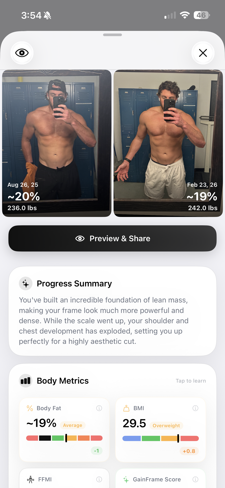
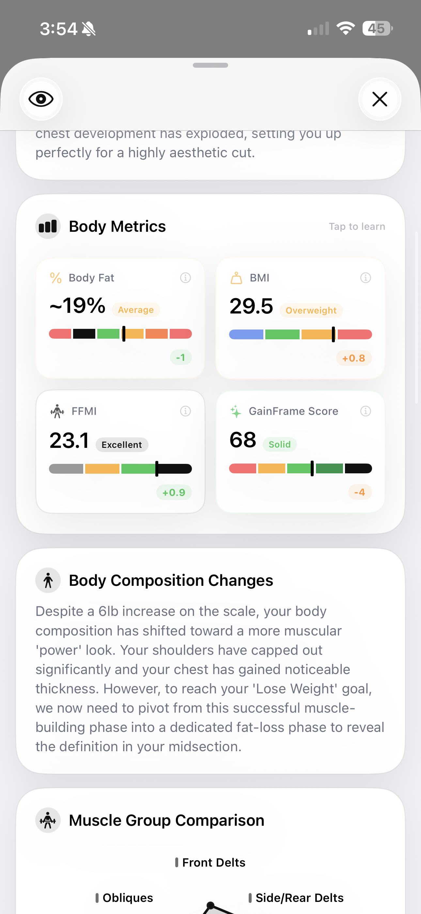
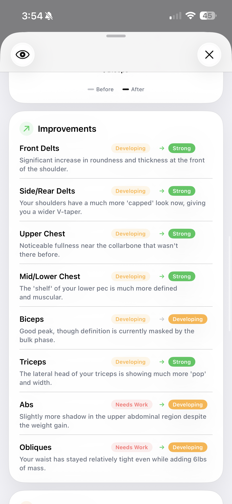
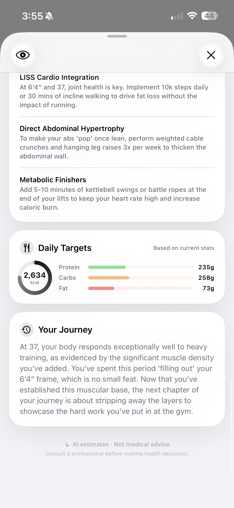
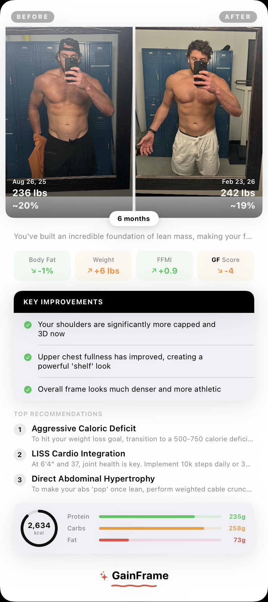

Deep Dive Compare: Quantify Exactly What Changed
Move beyond "I think I look bigger." See objective data on your body fat transitions, specific muscle upgrades, and what your next phase demands.

Looking at two progress photos side-by-side often leaves you playing a guessing game. Did my arms get bigger, or is my shirt just tighter? Did I lose fat, or is the lighting better? GainFrame's new Deep Dive Compare strips away the subjectivity, providing a quantified breakdown of how your physique evolved between any two dates.
The Progress Summary & Body Metrics
When you select two photos, the AI immediately establishes the big picture. The Progress Summary synthesizes your journey perfectly. For example, if you've been on a 6-month bulk, it will accurately identify that while the scale went up, your shoulder and chest development has exploded, setting an incredible foundation for a highly aesthetic cut.
This is backed up by raw data. You can tap into the full Body Metrics breakdown to see precise numbers tracking the delta between your two selected dates.

Instead of relying on a mirror, you get concrete numbers: a 6 lb weight gain accompanied by a 1% body fat decrease translates directly into significant lean mass addition. You see your FFMI (Fat-Free Mass Index) jump from your previous baseline in real-time.
Mapping The Granular Muscle Improvements
The core of Deep Dive Compare is tracking where those gains happened. We map specific muscle sub-groups to show exactly which areas leveled up.

This visual breakdown eliminates ambiguity. You can see your Upper Chest and Side Delts graduate from Developing to Strong, accompanied by specific observations like "Noticeable fullness near the collarbone that wasn't there before." Conversely, it highlights lagging areas, giving you clear targets for your next training block.
Updated Targets For The Next Phase
Your body has changed, so your plan needs to adapt. Your old macro targets and priorities are obsolete.

Deep Dive Compare recalibrates your entire strategy based on the new baseline. The Daily Targets segment calculates fresh protein, carb, and fat requirements based on your updated stats. More importantly, the system generates targeted recommendations to address the specific visual feedback from the comparison—such as prescribing weighted cable crunches to thicken the abdominal wall once you start leaning out.
The Trophy: Export Your Transformation
We built a shareable scorecard that automatically packages your progress into a clean, aesthetic export. It perfectly formats your before-and-after photos, duration, weight delta, body fat change, and top 3 key visual improvements.

No more stitching photos together in Instagram layouts or trying to remember your starting weight. One tap generates a flawless summary of your hard work over the last 6 months, ready to save to your camera roll or send directly to a coach.
Available Today
Select any two photos in your timeline and hit Compare. See the data, identify the specific improvements, and grab your updated macro blueprint for the next block of training.
Get early access
Be the first to try GainFrame — we'll email you when it launches.
Free · No spam · Unsubscribe anytime